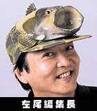

ニンテンドードリーム（略してニンドリ）は、1996年の創刊（当時は64ドリームでした）以来、人気ソフトの発売延期にめげず、期待のRPGの開発中止にもくじけず、毎度のゴショッカーの襲撃にもへこたれず、「愛と友情」をテーマに、しぶとく刊行を続けてきた任天堂のゲーム誌です。
ニンドリの最大の特徴は、なんといっても「読者あってのニンドリ」。幅広い年齢層の読者さんのみなさんに支えられて、21世紀の今日をむかえられていると言っていいでしょう。ゲームが大好きな小中高生だけでなく、やっとコントローラが握れるようになったちびっ子のいるファミリー、それに妙齢の女性読者が多いのもニンドリの特性なのです。
そのような読者さんに支えられているコーナーのひとつが、創刊号以ずっと続いている「任天堂公式Ｑ＆Ａ〜任天堂の質問箱」。新作ソフトから「世界一のゲーム会社」の歴史まで、任天堂に関するあらゆるギモンに答えていくコーナーなのですが、読者のみなさんの熱い質問がなければ続けることはできなかった名物企画と言えるでしょう。
また、毎月多くの読者さんから大量にイラストが寄せられる「それゆけ!! マリオ親衛隊」もニンドリの名物コーナーのひとつです。プロ顔負けの力作ぞろいで、ゲーム誌一、いや日本一のイラストコーナーであると自負しているのですが、これも、読者さんあっての企画ですよね。
そのほかにも、「ゲームソフトファンクラブ」や「ニンドリ学園」など、読者のみなさんが参加できるコーナーがいっぱい。もちろん、「ゲーム雑誌の主役はゲーム」ってわけで、新作ソフト紹介コーナーや、毎回魅力的なクリエイターが登場するロングインタビュー、さらには編集兼漫画家の中植茂久のコーナーなど、ニンドリならではの企画が充実してます。
今後も、人気キャラクターシールのふろくのほか、読者のみなさんに喜んでいただけるようなふろくや企画を考え、「ニンドリでは毎号なにかが起こる!?」と感じていただけるような雑誌にしていきたいと考えています。
「ニンドリってなんじゃい？」って言う人、一度手に取って読んでみてください。任天堂が大好きなら、アナタもきっとニンドリが好きになるはずですよ。
|